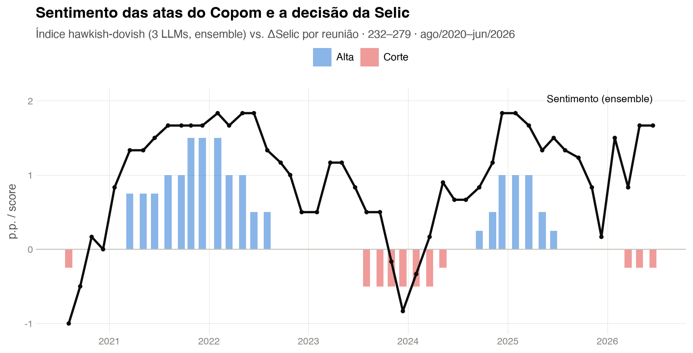

flowchart LR
subgraph Herdado["Sentimento COPOM (congelado)"]
SC[(scores 3 LLMs<br>Claude · Gemini · OpenAI)]
AT[(atas_cache.json<br>datas das reuniões)]
end
subgraph Coleta["Coleta via API BCB (python-bcb)"]
SGS432[(SGS 432<br>meta Selic)]
FOCUS[(Focus IPCA 12m<br>suavizada)]
META[(SGS 13521<br>meta de inflação)]
IBC[(SGS 24364<br>IBC-Br dessaz.)]
end
SC --> BUILD
AT --> BUILD
SGS432 --> BUILD
FOCUS --> BUILD
META --> BUILD
IBC --> BUILD
BUILD[["scripts/01_build_base.py<br>frequência de reunião"]] --> CSV[(data/base_taylor.csv<br>48 reuniões × 14 colunas)]
subgraph Modelagem["Regra de Taylor aumentada"]
CSV --> OLS[statsmodels OLS<br>HAC / Newey-West]
OLS --> M0["Baseline<br>hiato + desvio π"]
OLS --> M1["+ sentimento S_t<br>δ̂, ΔR²"]
OLS --> M2["antecedente<br>t → t+1"]
end
M0 --> PDF([Quarto Render PDF])
M1 --> PDF
M2 --> PDFRegra de Taylor com Sentimento do Copom — o tom das atas explica a Selic?
Python
Quarto
LLM
statsmodels
OLS
Regra de Taylor
Política Monetária
Banco Central
Macroeconomia
Séries Temporais
python-bcb
Extensão do Sentimento COPOM: o índice de tom hawkish-dovish das atas (3 LLMs) entra como regressor numa Regra de Taylor para a Selic, ao lado do hiato do produto e do desvio de inflação. Base montada na frequência de reunião — 48 reuniões (232–279, ago/2020–jun/2026), correlação sentimento × ΔSelic de 0,70 contemporânea e 0,63 antecedente.

Note🔗 Projeto-mãe: Sentimento COPOM
Este trabalho é uma extensão direta do Sentimento COPOM. Lá, construímos um Índice de Tom hawkish-dovish das atas do Copom com três LLMs em paralelo (Gemini Flash Lite, Claude Haiku 4.5, GPT-4.1-mini), calibrado em pontos percentuais da Selic. Aqui, esse índice deixa de ser o objeto final e vira um regressor: entra numa Regra de Taylor para testar se o tom da comunicação adiciona poder explicativo sobre a taxa de juros além dos fundamentos macroeconômicos tradicionais. Os scores dos três modelos são insumos congelados desta versão — não se reprocessam atas aqui; a escoragem incremental pertence ao projeto irmão.
Visão Geral
Este projeto testa, seguindo a metodologia CRISP-DM (Cross-Industry Standard Process for Data Mining), uma pergunta de economia monetária aplicada: o sentimento da comunicação do Copom, medido por LLMs, tem informação sobre a Selic que os fundamentos macro não capturam?
Para isso, montamos uma base na frequência de reunião do Copom (a unidade de observação é a reunião, não o mês) reunindo quatro blocos, cada um coletado de fonte pública com cache local incremental:
- Decisão da Selic — meta pós-reunião, variação (ΔSelic) e defasagem (SGS 432);
- Sentimento — índice de tom hawkish-dovish por LLM e ensemble (média simples dos três), herdado do Sentimento COPOM;
- Desvio da inflação esperada — expectativa Focus (IPCA 12 meses suavizada, mediana na véspera da reunião) menos a meta interpolada para o mesmo horizonte;
- Hiato do produto — ciclo do filtro Hodrick-Prescott (\(\lambda = 14400\)) sobre o log do IBC-Br dessazonalizado (SGS 24364), com defasagem de publicação de 2 meses.
O artefato final é um paper técnico reprodutível em Quarto + LaTeX, versionado formalmente (CHANGELOG + snapshots por release), no mesmo padrão editorial do projeto-mãe.
TipTese central
A Regra de Taylor — que explica a taxa de juros por hiato do produto e desvio da inflação em relação à meta — é o cavalo de batalha da política monetária empírica. A hipótese aqui é que o tom da comunicação carrega sinal incremental: dois cenários com hiato e desvio de inflação parecidos podem justificar respostas diferentes da Selic, e a diferença aparece na linguagem da ata. Na base montada, o ensemble de sentimento tem correlação de 0,70 com a ΔSelic contemporânea e de 0,63 com a ΔSelic da reunião seguinte — evidência preliminar de que o tom não só acompanha, mas antecede a decisão.
Motivação
A Regra de Taylor [@taylor1993] postula que o banco central ajusta a taxa de juros de referência em resposta a dois desvios: a inflação em relação à meta e o produto em relação ao potencial. É uma das relações mais estimadas em macroeconomia — mas trata a comunicação do banco central como ruído. Ao mesmo tempo, uma literatura crescente mostra que a comunicação é, em si, um instrumento de política monetária [@blinder2008; @hansen2018]: o tom com que o cenário é descrito antecipa a direção dos juros.
O projeto-mãe transformou esse tom em uma série quantitativa. Este projeto fecha o elo, colocando as duas peças na mesma regressão. As perguntas de pesquisa:
- O sentimento sobrevive aos controles? Com hiato do produto e desvio de inflação na regressão, o coeficiente do sentimento (\(\hat{\delta}\)) permanece positivo e estatisticamente significante?
- O tom antecede a decisão? O sentimento da ata da reunião \(t\) (ou defasado, \(t-1\)) prevê a ΔSelic da reunião seguinte? A correlação antecedente de 0,63 é apenas contemporaneidade disfarçada ou há timing?
- A escolha do LLM muda a conclusão econômica? Como os três modelos divergem na intensidade do score (a tese do projeto-mãe), o coeficiente \(\hat{\delta}\) e o ganho de \(R^2\) são robustos ao provedor de IA usado como fonte do regressor?
- A especificação importa? Regra contemporânea vs. forward-looking com suavização; hiato via HP vs. fonte alternativa (IFI) — o sinal do sentimento é robusto?
Metodologia — CRISP-DM
O projeto segue o processo CRISP-DM, aqui aplicado a um problema de econometria de séries temporais aumentada por um regressor gerado por IA.
| Fase | Aplicação no Projeto |
|---|---|
| 1. Entendimento do Negócio | Formalização da Regra de Taylor forward-looking com suavização (@taylor1993; @clarida2000); escolha da variável-alvo (meta Selic / ΔSelic por reunião); hipótese testável: o sentimento das atas adiciona poder explicativo além de hiato e desvio de inflação |
| 2. Entendimento dos Dados | Mapeamento de 4 blocos (Selic SGS 432; sentimento herdado dos 3 LLMs; Focus IPCA 12m suavizada; hiato via IBC-Br). A unidade é a reunião do Copom (232–279), não o mês — todos os regressores são alinhados à data da reunião |
| 3. Preparação dos Dados | scripts/01_build_base.py monta data/base_taylor.csv (uma linha por reunião). Decisões documentadas: selic_pos = 1º valor após a reunião; Focus = última mediana anterior à reunião (informação disponível ao comitê); meta interpolada por média ponderada; hiato defasado em \(m-2\). Cache local incremental por fonte |
| 4. Modelagem | Regra de Taylor aumentada estimada por OLS com erros HAC (Newey-West): \(i_t = \rho\, i_{t-1} + (1-\rho)[\alpha + \beta(\pi^e_t - \pi^*_t) + \gamma\, \text{hiato}_t] + \delta\, S_t + \varepsilon_t\). Comparação com/sem o termo de sentimento e por fonte de LLM. (Em estruturação — v0.1: base pronta; estimação é o próximo bloco) |
| 5. Avaliação | Teste de significância de \(\hat{\delta}\) (o sentimento sobrevive aos controles?); ganho de \(R^2\)/\(\bar{R}^2\) ao adicionar \(S_t\); especificação antecedente (\(t \to t+1\)); robustez ao provedor de LLM e à fonte do hiato. Evidência preliminar já na base: correlação \(S \times \Delta\)Selic de 0,70 (contemporânea) e 0,63 (antecedente) |
| 6. Implantação | Paper reprodutível em Quarto + LaTeX; base regenerável apagando o cache; sistema formal de releases (CHANGELOG + versions/); edições base (auditável) e público (do leitor), como no projeto-mãe |
Arquitetura
1. Entendimento do Negócio
1.1 A Regra de Taylor como cavalo de batalha
A Regra de Taylor descreve a política monetária como uma resposta sistemática da taxa de juros a dois desvios fundamentais:
\[ i_t = \alpha + \beta\,(\pi^e_t - \pi^*_t) + \gamma\,\text{hiato}_t + \varepsilon_t \]
Empiricamente, estima-se uma versão suavizada e forward-looking [@clarida2000], em que o BC ajusta a taxa gradualmente (termo de suavização \(\rho\)) e reage a expectativas, não a valores realizados:
\[ i_t = \rho\, i_{t-1} + (1-\rho)\big[\alpha + \beta\,(\pi^e_t - \pi^*_t) + \gamma\,\text{hiato}_t\big] + \varepsilon_t \]
1.2 O aumento por sentimento
A contribuição do projeto é acrescentar o índice de tom \(S_t\) como regressor:
\[ i_t = \rho\, i_{t-1} + (1-\rho)\big[\alpha + \beta\,(\pi^e_t - \pi^*_t) + \gamma\,\text{hiato}_t\big] + \delta\, S_t + \varepsilon_t \]
O coeficiente de interesse é \(\hat{\delta}\). Sob a hipótese nula (\(\delta = 0\)), o tom da ata é redundante dado hiato e desvio de inflação. Rejeitá-la significa que a linguagem do Copom carrega informação sobre a Selic que os fundamentos observáveis não capturam.
1.3 Critérios de sucesso
| Critério | Meta |
|---|---|
| Significância do sentimento | \(\hat{\delta}\) com \(p < 0{,}05\) mantidos os controles |
| Ganho explicativo | \(\Delta\bar{R}^2 > 0\) ao adicionar \(S_t\) ao baseline |
| Antecedência | Correlação \(S_t \times \Delta\)Selic\(_{t+1}\) economicamente relevante (base: 0,63) |
| Robustez ao LLM | Sinal e significância de \(\hat{\delta}\) estáveis entre Claude, Gemini e OpenAI |
| Reprodutibilidade | Base regenerada do zero apagando os caches de data/raw/ |
2. Entendimento dos Dados
2.1 Fontes
| Bloco | Fonte | Série / origem |
|---|---|---|
| Reuniões e datas | API BCB (atas), cache herdado | atas_cache.json — data da reunião, nº 232–279 |
| Meta Selic | SGS 432 (diária) | Meta definida pelo Copom |
| Sentimento | Sentimento COPOM (congelado) | scores_{claude,gemini,openai}_cache.csv |
| Inflação esperada | Focus/BCB | IPCA 12m suavizada, mediana, baseCalculo=0 |
| Meta de inflação | SGS 13521 (anual) | Interpolada para o horizonte de 12m |
| Hiato do produto | SGS 24364 (IBC-Br dessaz.) | Filtro HP (\(\lambda = 14400\)) sobre o log |
2.2 A unidade de observação é a reunião
Diferentemente de estimações macro em frequência mensal ou trimestral, aqui cada linha é uma reunião do Copom. Isso alinha a decisão de juros à ata que a acompanha e ao estado da economia como observado pelo comitê naquele momento — daí a exigência de usar sempre a última divulgação anterior à reunião para o Focus, evitando look-ahead bias.
2.3 Recorte amostral
A amostra vai da reunião 232 (ago/2020) — herdando o início do projeto-mãe, que corresponde ao template estrutural estável das atas pós-pandemia — à reunião 279 (jun/2026), totalizando 48 reuniões. As reuniões 278 e 279 foram adicionadas em 2026-07-05, escoradas no projeto irmão com o mesmo prompt e modelos da v1.0.
3. Preparação dos Dados
Toda a montagem vive em scripts/01_build_base.py, que produz data/base_taylor.csv (uma linha por reunião) e cria cache local por fonte. Decisões de coleta documentadas:
3.1 Selic e variação
# A nova meta vigora a partir do dia útil seguinte à reunião:
df["selic_pre"] = [selic.asof(d) for d in df["data"]] # valor na data
df["selic_pos"] = [selic[selic.index > d].iloc[0] for d in df["data"]] # 1º após
df["d_selic"] = df["selic_pos"] - df["selic_pre"] # ΔSelic decidida
df["selic_lag"] = df["selic_pos"].shift(1) # i_{t-1}3.2 Sentimento herdado (ensemble)
for modelo in ["claude", "gemini", "openai"]:
s = pd.read_csv(RAW / f"scores_{modelo}_cache.csv")
df = df.merge(s, on="reuniao", how="left")
df["score_ensemble"] = df[["score_claude", "score_gemini", "score_openai"]].mean(axis=1)3.3 Desvio da inflação esperada
O Focus entra pela última mediana divulgada antes da reunião (informação disponível ao comitê). A meta de 12 meses é a média ponderada das metas anuais do ano corrente e seguinte pelos meses cobertos — com a meta contínua de 3% a partir de 2025, a ponderação torna-se inócua e o desvio fica dominado pela expectativa.
df["ipca_e12m"] = [f.asof(d - pd.Timedelta(days=1)) for d in df["data"]]
df["desvio_inflacao"] = df["ipca_e12m"] - df["meta_12m"]3.4 Hiato do produto
ciclo, _ = sm.tsa.filters.hpfilter(np.log(ibc), lamb=14400) # ciclo HP
hiato = (ciclo * 100).rename("hiato") # % do potencial
# cada reunião usa o valor de m-2 (defasagem de publicação do IBC-Br)
NoteDuas decisões de coleta que exigiram checagem empírica
SGS 24364 vs. 24363 — verificamos que a 24364 é a série com ajuste sazonal (amplitude sazonal do crescimento m/m de 0,8%, contra 11,4% da 24363). Viés de ponta do HP — o filtro Hodrick-Prescott sofre de end-point bias, que afeta justamente as observações recentes; fica registrado como limitação, e a robustez com o hiato da IFI é passo futuro.
4. Modelagem
4.1 Especificação de referência
A Regra de Taylor aumentada, estimada por OLS com erros-padrão HAC (Newey-West) para lidar com a autocorrelação natural de séries de política monetária:
\[ i_t = \rho\, i_{t-1} + (1-\rho)\big[\alpha + \beta\,(\pi^e_t - \pi^*_t) + \gamma\,\text{hiato}_t\big] + \delta\, S_t + \varepsilon_t \]
O desenho experimental compara três especificações aninhadas:
| Modelo | Regressores | Pergunta |
|---|---|---|
| M0 — Baseline | \(i_{t-1}\), desvio π, hiato | Regra de Taylor clássica |
| M1 — Aumentada | M0 \(+\ S_t\) | \(\hat{\delta}\) significante? \(\Delta\bar{R}^2 > 0\)? |
| M2 — Antecedente | ΔSelic\(_{t+1} \sim S_t\) + controles | O tom antecede a decisão? |
NoteEstado atual — v0.1
A base de dados está pronta e auditada (documento 01_base_dados.qmd → PDF, com fontes, checagens de consistência, descritivas e correlações). A estimação da Regra de Taylor é o próximo bloco do paper — por isso, os números reportados abaixo são as correlações da base, não coeficientes estruturais estimados. Nenhum número aqui é digitado à mão: todos saem de chunks executáveis, seguindo a regra de ouro da skill paper-analise-macro.
4.2 Evidência preliminar da base
Antes de qualquer estimação estrutural, a base já revela o padrão que motiva o projeto:
- Correlação sentimento (ensemble) × ΔSelic contemporânea: 0,70
- Correlação sentimento (ensemble) × ΔSelic da reunião seguinte (\(t \to t+1\)): 0,63
A queda modesta da correlação ao defasar (0,70 → 0,63) é o sinal de antecedência: o tom da ata carrega informação sobre a decisão que ainda virá. As duas observações mais recentes (reuniões 278 e 279) são cortes de 0,25 p.p. acompanhados de tom hawkish no ensemble (+1,7) — uma tensão que a especificação aumentada deve ajudar a interpretar.
5. Avaliação
O plano de avaliação segue quatro eixos, aninhados na comparação M0 → M1 → M2:
5.1 O sentimento sobrevive aos controles?
Teste-\(t\) de \(\hat{\delta}\) na M1 sob erros HAC. A pergunta empírica: mantidos hiato e desvio de inflação, o coeficiente do tom permanece positivo e significante (\(p < 0{,}05\))?
5.2 Quanto o sentimento adiciona?
Comparação de \(\bar{R}^2\) entre M0 e M1. Um \(\Delta\bar{R}^2 > 0\) material significa que a linguagem das atas explica variação da Selic não capturada pelos fundamentos observáveis.
5.3 O tom antecede a decisão?
A especificação antecedente (M2) testa se \(S_t\) prevê ΔSelic\(_{t+1}\). A correlação de 0,63 já observada é o ponto de partida — a regressão controla por hiato e desvio de inflação para isolar o componente genuinamente prospectivo do tom.
5.4 A conclusão econômica depende do LLM?
Como os três modelos divergem na intensidade do score (a tese do projeto-mãe: \(\hat{\beta}\) de calibração varia de +0,36 a +0,62 p.p. por unidade de score), reestima-se a M1 usando cada LLM como fonte de \(S_t\). Se \(\hat{\delta}\) mantém sinal e significância entre Claude, Gemini e OpenAI, a conclusão econômica é robusta ao provedor de IA — um requisito para levar o índice a sério como input macro.
Estrutura do Projeto
Taylor_Sentimento/
│
├── taylor_sentimento_IA_base.qmd # paper técnico reprodutível (echo: true)
├── 01_base_dados.qmd # documento de inspeção da base → PDF
├── referencias.bib # bibliografia BibTeX
├── AM.png # logotipo na titlepage
│
├── scripts/
│ └── 01_build_base.py # montagem da base na frequência de reunião
│
├── data/
│ ├── base_taylor.csv # 48 reuniões × 14 colunas (saída)
│ └── raw/ # insumos + caches de API
│ ├── scores_claude_cache.csv # sentimento herdado (congelado)
│ ├── scores_gemini_cache.csv
│ ├── scores_openai_cache.csv
│ ├── atas_cache.json # datas das reuniões
│ ├── selic_cache.json # SGS 432
│ ├── focus_ipca12m_cache.csv # Focus IPCA 12m suavizada
│ ├── meta_inflacao_cache.csv # SGS 13521
│ └── ibcbr_cache.csv # SGS 24364
│
├── CHANGELOG.md # histórico de releases (Keep a Changelog)
├── versions/ # snapshots por release
├── _rollback/ # checkpoints de sessão
│
└── portfolio/
├── taylor-sentimento.qmd # ESTE arquivo (ficha CRISP-DM)
└── taylor-sentimento-capa.png # imagem de capaTecnologias
| Camada | Tecnologia |
|---|---|
| Renderização | Quarto + LaTeX (xelatex) |
| Pacotes LaTeX | booktabs, threeparttable (padrão JEL/AER) |
| Linguagem | Python 3.11+ |
| Inferência estatística | statsmodels (OLS, HAC/Newey-West, filtro HP) |
| Manipulação de dados | pandas, numpy |
| Coleta de dados | python-bcb (SGS, Expectativas/Focus), requests |
| Visualização | plotnine |
| Ambiente | python-dotenv |
| Índice de sentimento | Herdado do Sentimento COPOM (LangChain + Pydantic, 3 LLMs) |
Como Executar Localmente
Pré-requisitos
- Python 3.11+
- Quarto ≥ 1.4
- TinyTeX / TeX Live (para renderização PDF via xelatex)
Chaves de API de LLM não são necessárias no fluxo padrão — os scores de sentimento são insumos congelados herdados do projeto irmão. Só há re-escoragem de atas no Sentimento COPOM.
Instalação
python3 -m venv .venv
source .venv/bin/activate
pip install -r requirements.txtMontar a base e renderizar
# 1) Monta data/base_taylor.csv (coleta com cache local em data/raw/)
python scripts/01_build_base.py
# 2) Documento de inspeção da base → PDF
quarto render 01_base_dados.qmd --to pdf
# 3) Paper técnico (Regra de Taylor aumentada)
quarto render taylor_sentimento_IA_base.qmd --to pdfReprocessamento
# Apaga os caches de coleta para forçar novo download do BCB
# (os scores de sentimento em raw/ permanecem — são congelados)
rm data/raw/focus_ipca12m_cache.csv data/raw/meta_inflacao_cache.csv data/raw/ibcbr_cache.csv
python scripts/01_build_base.pyPróximos Passos
- Estimar a Regra de Taylor aumentada (M0 → M1 → M2) por OLS com erros HAC, exportando as tabelas de regressão em
booktabs/threeparttable; - Robustez ao provedor de LLM — reestimar a M1 usando Claude, Gemini e OpenAI isoladamente como fonte de \(S_t\);
- Robustez do hiato — comparar o hiato via HP (com viés de ponta) contra o hiato oficial da IFI (trimestral interpolado);
- Especificação preditiva — formalizar a regressão antecedente \(t \to t+1\) e testar defasagens do sentimento;
- Endogeneidade — avaliar GMM caso a simultaneidade tom × decisão se mostre relevante;
- Sentimento ortogonalizado — usar o resíduo do tom (controlando expectativas Focus) como regressor, isolando a surpresa de comunicação;
- Edição do leitor — criar
taylor_sentimento_IA_publico.qmd(echo: false) quando o paper amadurecer.
Referências
- Clarida, R.; Galí, J.; Gertler, M. (2000). Monetary Policy Rules and Macroeconomic Stability: Evidence and Some Theory. Quarterly Journal of Economics, 115(1), 147–180.
- Blinder, A. S.; Ehrmann, M.; Fratzscher, M.; De Haan, J.; Jansen, D.-J. (2008). Central Bank Communication and Monetary Policy. Journal of Economic Literature, 46(4), 910–945.
- Hansen, S.; McMahon, M.; Prat, A. (2018). Transparency and Deliberation Within the FOMC: A Computational Linguistics Approach. Quarterly Journal of Economics, 133(2), 801–870.
- Hodrick, R. J.; Prescott, E. C. (1997). Postwar U.S. Business Cycles: An Empirical Investigation. Journal of Money, Credit and Banking, 29(1), 1–16.
- Taylor, J. B. (1993). Discretion versus Policy Rules in Practice. Carnegie-Rochester Conference Series on Public Policy, 39, 195–214.
- Woodford, M. (2003). Interest and Prices: Foundations of a Theory of Monetary Policy. Princeton University Press.
- Wirth, R.; Hipp, J. (2000). CRISP-DM: Towards a Standard Process Model for Data Mining.
Projeto-mãe: Sentimento COPOM — Índice de Tom das Atas do Copom com Múltiplos LLMs